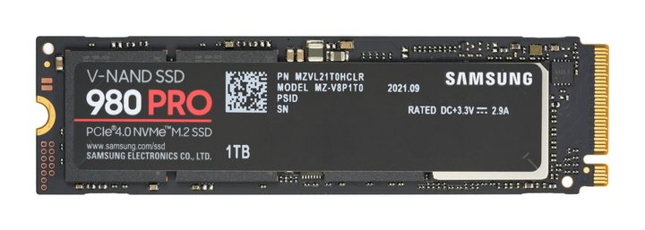

Content-addressed storage

{kind=link}
Objects are named by the SHA-256 of their contents and assembled into Merkle trees. A copy is a pointer. A snapshot is one root hash. Two files with identical contents are one object with two names in two directories.
The rule that makes it work
The content hash covers content and never block locations. Moving a block would otherwise rename the object it belongs to, and every reference to it would break for a reason that has nothing to do with the data.
Directory entries are kept sorted, so listing a directory returns lexicographic order. That is why stored corpus blobs are zero-padded to four digits: sorted order becomes insertion order, and every positional split boundary in the evaluation harness depends on it. Past four digits the padding truncates and the property fails silently, which is why the tool that emits bundles refuses to produce a larger one.
Surviving power loss
Objects are written before anything points at them, and the root is written last. A snapshot that was interrupted leaves objects nothing references, which the next mount ignores. There is no journal, because content addressing makes the ordering argument sufficient on its own.
Durability is a snapshot rather than a write, and the interface says so. Writing a blob puts it in the working tree, which is memory. It survives a reboot only once a snapshot has committed the tree, and only if a store is mounted at all. The first version of the conversation parking code returned a boolean, reported success for a memory-only write, and lost the conversation at the next boot having said it was saved. It answers with three outcomes now: durable, volatile, or failed.
The driver, and why it is small
NVMe is a queue pair and a doorbell. Build a submission entry, ring the doorbell, wait for the completion. There is no bus enumeration beyond finding the controller, no command set negotiation, and no scatter-gather beyond a physical region page list. The driver is small because the specification put the complexity in the host and this host does the simple version.
Completion latency feeds the entropy pool, on a path deliberately separate from the one that decides whether a person is at the keyboard.
Write locking, and the range
Writes are locked by default. Initialisation unlocks only after a target region has been identified, formatting re-checks, and every error path re-locks, because leaving it open is how a safety mechanism becomes decorative. On a disk fully allocated to another operating system there is no such region and initialisation fails, which is the intended outcome.
The unlock used to be one bit. Unlocking said writes were allowed and nothing said where, so from the moment initialisation succeeded every block on the device was writable: the partition table, the boot partition, and the other operating system that is still the only other thing on this disk.
The unlock names a range now and the range is enforced on every write. The status display prints the window beside the word unlocked rather than leaving an operator to assume it means the disk. A test suite asserts the whole decision without a device and without writing anything, including that a write starting inside the window and overrunning it is refused, and that a length which overflows does not wrap into a pass. That is a prerequisite for anything that writes the boot partition, because an updater built on a global unlock is a whole-disk writer.
One warning that belongs here. The boot disk in the target laptop is counterfeit: it advertises 976 GB and holds 14.67. That is why the partition scheme is MBR, since a backup GPT header would land in flash that does not exist, and why the layout tool carries a hard size limit.